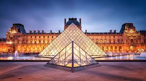
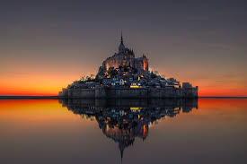
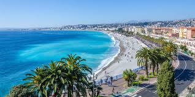

Eiffel Tower
برج إيفل
برج إيفل هو أشهر معلم في باريس ويعد رمزاً لفرنسا ويستقبل ملايين الزوار سنوياً.
The Eiffel Tower is the most famous landmark in Paris and is a symbol of France, attracting millions of visitors annually.

Louvre Museum
متحف اللوفر
متحف اللوفر هو أكبر متحف فني في العالم ويضم مجموعة ضخمة من الأعمال الفنية بما في ذلك لوحة الموناليزا.
The Louvre Museum is the largest art museum in the world and houses a vast collection of artistic works, including the Mona Lisa.

Mont Saint Michel
مونت سانت ميشيل
جزيرة تاريخية جميلة تضم ديراً قديماً وتعد من أهم المعالم السياحية في فرنسا.
Mont Saint Michel is a beautiful historic island that features an ancient abbey and is one of the most important tourist attractions in France.

Nice Beach
شاطئ نيس
شاطئ نيس هو أحد أجمل الشواطئ في فرنسا ويتميز بجماله الطبيعي وانتعاشه.
Nice Beach is one of the most beautiful beaches in France, known for its natural beauty and tranquility.